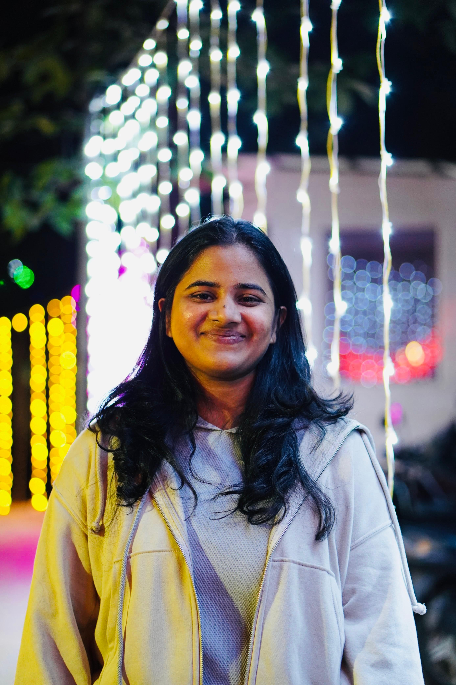

Senior Data Scientist, Atlas Copco Group · M.Tech, IISc Bangalore

I work at the intersection of signal processing, deep learning, and computer vision, with a focus on building learning systems that remain reliable under distribution shift and that translate cleanly from research to real-world deployment. I earned my M.Tech in Signal Processing from the Indian Institute of Science (IISc), Bangalore, and my B.Tech in Electronics and Communication Engineering from JNTU Kakinada. Since 2022, I have been working as a Senior Data Scientist at Atlas Copco Group, developing machine learning solutions for machine health monitoring, scientific machine learning, surrogate-based design optimization, and industrial AI applications.
My technical interests span deep learning architectures including convolutional neural networks (CNNs), GANs, Transformers, Vision Transformers, Graph Neural Networks, Neural Operators, and Physics-Informed Neural Networks. More broadly, I work on signal processing, image processing, optimization, Bayesian optimization, anomaly detection, domain adaptation, and interpretable machine learning using techniques such as t-SNE and SHAP.
My research interests include scientific machine learning, including neural operators, physics-informed learning, surrogate modeling, and Bayesian optimization for engineering systems, as well as computer vision and perception for reliable learning under domain shifts and safety-critical environments. I am particularly interested in developing machine learning methods that combine physical knowledge with data-driven models to improve robustness, generalization, and interpretability.
Developed U-FNO, a Fourier Neural Operator-based architecture for robust domain adaptation in bearing fault diagnosis under sensor and operating-condition shifts. The model combines spectral learning, multi-scale feature extraction, and CORAL-based feature alignment to improve cross-domain generalization while requiring only limited target-domain labels.
Developing robust machine learning methods for machine health monitoring under changing operating conditions. The work focuses on improving cross-domain generalization, model reliability, and data-efficient adaptation for industrial diagnostic systems.
Developing scientific machine learning and surrogate modeling techniques for engineering design optimization. The project focuses on accelerating computational design workflows through data-driven optimization and efficient exploration of complex design spaces.
Developed machine learning models for estimating compressor operating conditions from vibration signals. The work involved signal processing, feature engineering, and deep learning techniques for reliable industrial condition monitoring.
Developed deep learning methods for estimating lubricant levels from acoustic measurements. The project explored robust feature learning and predictive modeling for non-invasive industrial monitoring applications.
Developed an unsupervised deep-learning framework that reconstructs HDR images from multi-exposure inputs without ground-truth supervision. Introduced a custom loss combining structural and perceptual quality measures, improving MEF-SSIM over the baseline. Resulted in an arXiv preprint.
Developed facial emotion recognition models using AlexNet feature extraction and SVM classification on JAFFE, AFED and FER datasets while exploring transfer learning and cross-dataset generalization.
Implemented image classification using CNN features (AlexNet, ResNet) and compared Normalized Cuts with Fully Convolutional Networks for semantic image segmentation.
Worked on BM3D denoising, wavelet denoising, JPEG compression, perceptual quality metrics (SSIM and LPIPS), and image enhancement techniques.
Implemented Scale-Invariant Feature Transform (SIFT) and analyzed feature robustness under scale, rotation, blur and noise.
Designed a fuzzy logic-based impulse noise removal algorithm that preserved image edges while outperforming conventional median filtering techniques.
The fastest way to reach me is by email. My CV is available here.